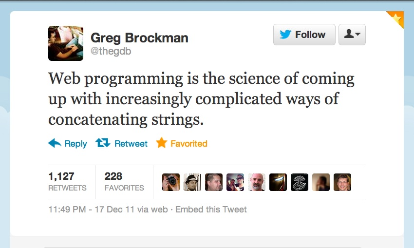
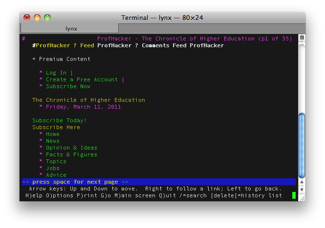
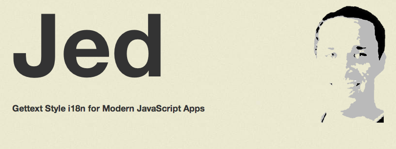

# The *UX* of Language
### It are very importants.
# *Briefly*
There's a lot of pressure for
someone who is talking on
*The UX of Language*
to speak eloquently.
There is also often a misconception that
I can speak multiple languages.
I assure you
*No Conozco Pantelones Verdes*
Let's call me an
*enabler*
of those people who can speak
with grace and restraint.
*;)*
## Thing(s) about *Alex*
I *like* to build JavaScript programs
My mom was an english teacher
(I think)
8 inch vertical jump
*Bench* 115 lbs
*Squat* 250 lbs

# A Brief History of
# *String Concatenation*
# 1986

Static text files ruled the web.
# Some time passes
People desire to
*customize content*
based on the person on the page
Enter the era of
## *Literally Just*
## *Outputting Strings*
# 1993 : CGI-BIN
#!/usr/bin/perl
print "Content-type:text/html\r\n\r\n";
print '<html>';
print '<head>';
print '<title>Hello Word - First CGI Program</title>';
print '</head>';
print '<body>';
print '<h2>Hello Word! This is my 1st CGI app!</h2>';
print '</body>';
print '</html>';
1;
Enter the era of
*Crappy Templates*
that have enough logic to make things work.
# 1995
*PHP* (Personal Home Page) is released.
Nearly 10 Years of
## *The String Concatenation*
# *Dark Ages*
# 2004-Present
var data = model.get('user');
render(userTemplate(data));
*MVC Frameworks* promote data/presentation decoupling
*Logicless templates* come into popularity
## So we can finally render
# *HTML*
## What about rendering a sentence?
# A Templated Sentence
// Handlebars template
Welcome to the site, {{user_name}}!
// Handlebars template
Hi {{user_name}}, you have {{msg_count}} new messages!
## Seems *good*?!?!
# *nope.*
## Hi *Alex*, you have *1* new messages!
## *gross.*
# The *UX* of Language
Our traditional way of concatenating
strings together is *not sufficient*
when those strings form a sentence.
## *POLL*
Do the visitors of your site care
more about well-formed markup or
well-formed sentences?
## We can do *better*
## Consider the previous example
*>* You have 2 new messages.
## What about?
You have X new message(s).
Messages you have: 2
# lol*no*
## Plural Branching
if (num === 1) {
return 'You have 1 new message.';
}
else {
return 'You have ' + num + ' new messages.';
}
## Let's add spanish...
if (lang == 'en') {
if (num === 1) {
return 'You have 1 new message.';
}
else {
return 'You have ' + num + ' new messages.';
}
}
else if (lang == 'es') {
if (num === 1) {
// close enough
return 'Tienes una message nueva.';
}
else {
return 'Tienes ' + num + ' messages nuevas.';
}
}
## Pretty ugly, and coupled
## directly into your _app_ code.
## *plus*
## consider these commonly
## supported languages
am bn cs de es fa fr gsw hi id it kn
ln mk mr nl pl ru sl sv te tr vi ar
br cy el et fi ga gu hr in iw ko lt
ml ms no pt shi sq sw th uk zh bg ca
da en eu fil gl he hu is ja lag lv mo
mt or ro sk sr ta tl ur
Where's your
## *if-statement-pluralization*
# *God*
## Now?!
## I know what you're thinking
## Richard Stallman hath fought
## the i18n ninjas and bestoweth
## *GNU Gettext* among us.

## I thought so too.
## Navigating the
## *Message* Landscape
# *properties files*
## Usually just for i18n
### (if you can call it that)
## Key Value Pairs
## *Common everywhere*
## (Java/Spring, Rails, etc)
## Doesn't really address any of the hard
## problems except rendering different
## strings for different locales
## Lot's of time they'll add
## *`sprintf`*
## Properties + Interpolation
var properties_en = {
"msg_count" : "You have %d messages.",
};
sprintf( properties_en.msg_count, num_msgs );
## Look *familiar*?
## So we can *switch out* messages
## and we can *interpolate* data into them.
## But they're incorrectly *pluralized* and
## devoid of *gender* or *context*
## (and still more!)
## Not to mention *authoring* templates
## with no messages in view
## starts to suck fast.
# Back to *Stallman*
# Gettext
#
## *Plural Forms* and *PO Files*
## Decouples data and message
## Decouples data and message
## *and some locale specifics*
PO Files (as json, cause .po is uggers)
{
"locale" : "en_US",
"plural_form" : function (n) {
if (n === 1) {
return 0;
}
return 1;
},
"messages" : {
"There is 1 message." : [
"There is 1 message.",
"There are %d messages."
]
}
}
## *Plural Form* Functions
These are executed at runtime to see
which of the strings to return.
var msg = ngettext(
'There is 1 message',
'There are %d messages.',
msg_count
);
return sprintf(msg, msg_count);
## The *English* Plural Form
function (n) {
if (n === 1) {
return 0;
}
return 1;
}
## The *Spanish* Plural Form
function (n) {
if (n === 1) {
return 0;
}
return 1;
}
## The *French* Plural Form
function (n) {
if (n == 1 || n == 0) {
return 0;
}
return 1;
}
My Template
<h1>Jimmy's Message Notifier</h1>
<p>{{_ "There is 1 message." "There are %d messages." num_msgs}}</p>
## Gettext will *prefix* existing keys with
## your *context*. This can be used for
## differentiating *gender* messages.
Contexts for Gender
{
"locale" : "en_US",
"plural_form" : function (n) {
if (n === 1) { return 1; }
return 0;
},
"messages" : {
"male*He has 1 message." : [
"He has 1 message.",
"He has %d messages."
],
"female*He has 1 message." : [
"She has 1 message.",
"She has %d messages."
]
}
}
## So, for gender...
pgettext("He liked it", gender);
## Common Mistake
gettext("I like my red ") + gettext('shirt');
## You *cannot ever* rely on being able to
## concatenate two translated strings into
## a *single message*.
## I like my *red* shirt
# vs.
## Me gusta mi camisa *roja*
## What do we have now?
## We can *pluralize* our message.
## We can *interpolate* our message.
## We can *pluralize* our message
## correctly for each *locale*.
## We can have templates with messages
## *kind of* in them. At least readably.
## We can use gender specific words as the
## locale requires.
## Gettext seems to do a good job at
## our *core concerns* across locales.
## Interpolation
## Gender
## Pluralization
## Dev Happiness
# That's why I wrote *Jed*

var i18n = new Jed({ locale_data: { ... } });
// Use the chainable API
i18n.translate( "There is one translation." )
.onDomain( "messages" )
.withContext( "male" )
.ifPlural( num, "There are %d translations." )
.fetch( num );
// Or kick it old school
var out = i18n.dnpgettext(
"messages",
"male",
"There is one translation.",
"There are %d translations.",
num
);
Jed.sprintf( out, num );
# So what's *wrong* with it?
## Back to *just english*
## There are *3* messages from *2* people.
# *uh oh*
## Gettext cannot handle multiple plurals
## in the same message.
## What if I have a _real_ context?
## So what all is wrong with *gettext*?
## *Gettext* can only go one level deep on
## any of its features.
## It has a *C* API
## Plural Forms are *repeated* each translation
## Even if *one word* changes
## You have to retranslate the
## *whole sentence*
## *Fuzzy* matching is hard in the client
# Thanks *Norbert*
# ICU *MessageFormat*
## MessageFormat
## ==
## *PluralFormat* + *SelectFormat*
# PluralFormat
## zero, one, two, few, many, other
## Plural Functions
These are built into the spec, and pulled from [CLDR](http://cldr.unicode.org/)
function ( n ) {
if ( n === 1 ) {
return "one";
}
return "other";
}
## The most basic syntax overview
// Text is just text
Literal
// Wrap named variables in curlies
Literal {Variable}
// For the formatting functions
// start with a variable, name the type of formatter
{Variable, plural||select,
// List your options
option1 {literal} // this is recursive at this point
option2 {literal2 OR anotherMessageFormat}
option3 {# = Variable}
}
Try this again
You have {NUM_MSG, plural,
one {1 message}
other {# messages}
}.
## *+*
{
"NUM_MSG" : 1
}
## ICU Plural Keywords + Literals
You have {NUM_MSG, plural,
=0 {no new messages}
one {1 message}
other {# messages}
}.
## *+*
{
"NUM_MSG" : 1
}
## For those of you who've been saying
# "But I *don't need* multiple languages"
## *Try this in just english*
There are 5 results in 2 categories
## *Even better*
He received 5 results in 2 categories
Multiple Plurals
There {NRES, plural, one {is one result}
other {are # results}
} in {NCAT, plural, one {one category}
other {# categories}
}.
## *+*
{ "NRES" : 5, "NCAT": 2 }
Select Format
{GEND, select, male {He} female{She} other{They}
} found {NRES, plural, one {one result}
other {# results}
} in {NCAT, plural, one {one category}
other {# categories}
}.
## *+*
{ "NRES" : 5, "NCAT": 2, "GEND" : "male" }
Named Args
{THE_ARG} is a named argument.
## *+*
{ "THE_ARG" : "This Argument" }
Plugins
{PERSON} added {PLURAL_NUM_PEOPLE, plural, offset:1
=0 {no one}
=1 {just {GENDER, select, male {him} female {her} other{them}}self}
one {{GENDER, select, male {him} female {her} other{them}}self and one other person}
other {{GENDER, select, male {him} female {her} other{them}}self and # other people}
} to {GENDER, select,
male {his}
female {her}
other {their}
} group.
## Translator friendly because all
## variations are translated
## *together*
## *NOT* Translator friendly because
## you pretty much have to be a programmer
## to use the *syntax*

## *Compile-able*
## Uses Peg.js

Outputs JavaScript
{THE_ARG} is a named argument.
## *+*
(new MessageFormat()).precompile()
## Integrates directly into Handlebars*
<div>
{{#_ "key"}}
This is {NUM, plural,
one {a translated sentence}
other {multiple translated sentences}
{{/_}}
</div>
## So what does it all mean?

## It is *extremely easy* to just wrap your messages
## with a message formatting wrapper.
## *Even if* you don't have
## any intention of internationalizing.
## *Date* and *Number* formatting are important too
## if you are internationalizing your app.
## There's *no excuse* for sentence(s) like this.
## The language *on* your site is *more* important
## than the markup *in* your site.
# *Treat it that way*
## Question(s)?
### Alex Sexton | @SlexAxton | [alexsexton.com](http://alexsexton.com)